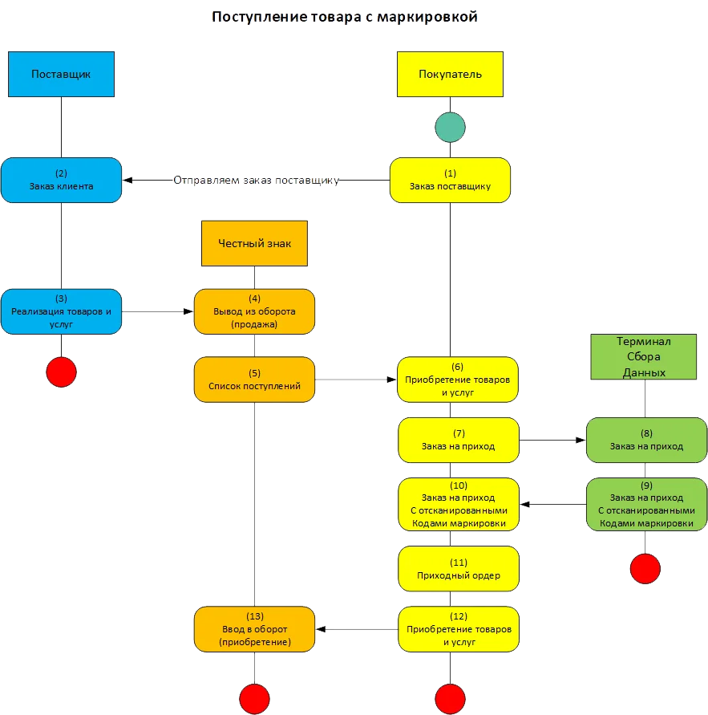
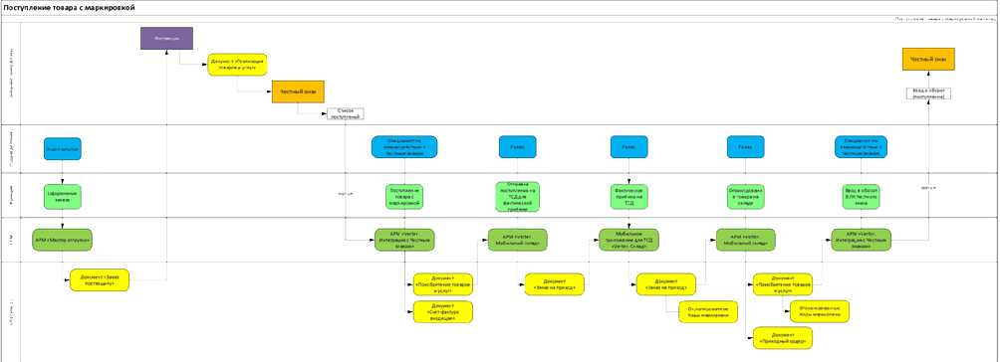

Поступление товара с маркировкой
В рамках данного кейса мы рассмотрим процесс приемки маркированного товара в 1С с использованием терминала сбора данных и специализированных рабочих мест
Пример: Наш поставщик (ООО "Производитель обуви") отправил нам автомобиль с партией обуви, а также отразил факт продажи в своём личном кабинете Честного знака
Условно, процесс приёмки маркированного товара состоит из следующих этапов:
- Получение из личного кабинета Честного Знака информации о поступлении с кодами маркировки
- Создание в 1С документа приобретения и отправка задания на склад о необходимости провести фактическую приёмку
- Склад, получив задание с помощью Терминала Сбора Данных (ТСД) осуществляет приёмку
- Начальник склада, получив событие о том, что приёмка осуществлена, создаёт приходный ордер, тем самым подтверждая приёмку
- Специалист, отвечающий за взаимодействие с Честным знаком получает информацию, что товар принят и отправляет в Честный знак подтверждение о приёмке
Схематично процесс приёмки маркированного товара показан на схеме ниже
Как мы видим из схемы, необходимо выполнить минимум 13 операций, часть из которых связаны с передачей данных в ЛК Честного знака
Проблема заключается в том, что поступлений может быть несколько, в каждом поступлении десятки тысяч единиц маркированного товара, в одной фуре может приходить товар по нескольким накладным.
Задача ИТ-службы сводится к тому, чтобы:
Обеспечить требования Закона об учете маркированного товара, предоставить сотрудникам удобный инструмент для ежедневной работы.
Следующая схема показывает как можно выполнить поставленные задачи, используя ряд разработок компании "Вертер. Сенсорные технологии":
Схема поступления товара с маркировкой в разрезе подразделений, документов и АРМов
На схеме показаны место и роль Автоматизированных Рабочих Мест (АРМ) для 1С и в чем их ключевой функционал, в частности:
Пройдемся по основным этапам приемки товара с маркировкой
Шаг 1. Загрузка из ЛК Честного знака актуальных поступлений
Шаг 2. Отправка на ТСД задания о необходимости приёмки товара
Шаг 3. Приёмка товара с маркировкой с использованием ТСД
Шаг 4. Получение результатов с ТСД о фактической приёмки
Шаг 5. Отправка в ЛК Честного знака подтверждения о приёмке маркированного товара
Оставить заявку на тести-рование
Наш менеджер свяжется с вами, и расскажет о всех вариантах и возможностях и интеграции